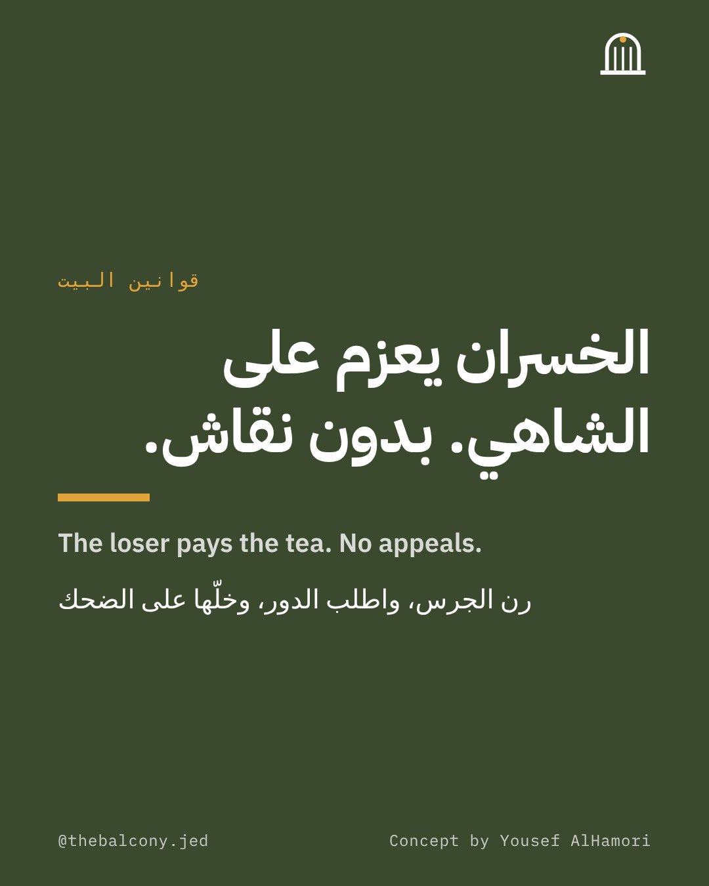
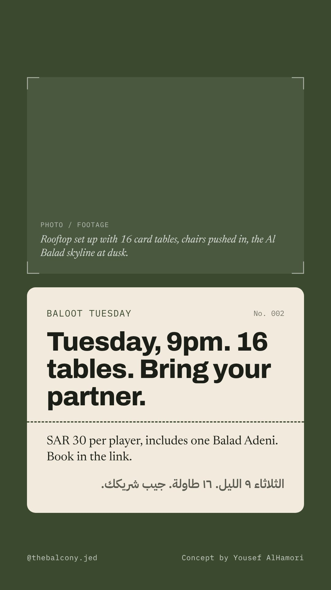
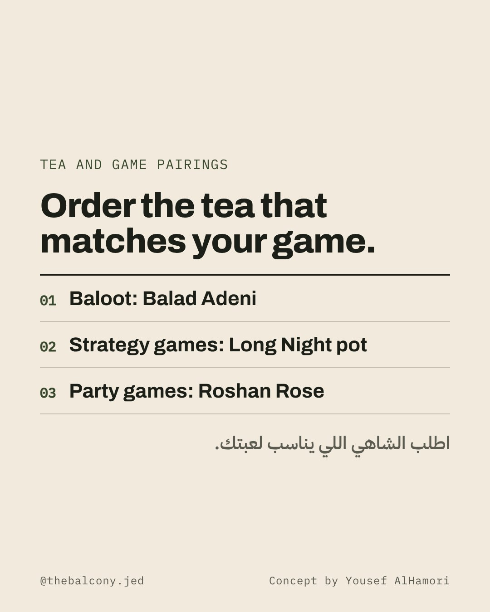

القانون الوحيد اللي ما نتنازل عنه 🔔 منشن اللي بيعزمك الليلة #الخسران_يعزم #البلد #جدة
Table Moments pillar: introduces the house rule and drives friend tags.
The Balcony films the losing moment at the table and makes the loser buy the tea.
The Balcony posts the Al Balad view, but nobody books a table for a view alone. This concept puts the camera on the games and the faces around them. A loser pays the tea ritual gives every table a moment worth filming and a reason to come back for a rematch.
The Balcony is a fictional brand I invented for this exercise. Names, prices and situations are made up; the research findings are real.
Three posts from the campaign, each with the caption as it would go out and the job it does. In production the framed areas become real photography or footage.



What the brand already does well on social, and the openings this plan goes after.
Fill weekday tables to 80% after 9pm and grow advance bookings to 40% of visits during Jeddah Season.
Jeddah friend groups aged 18 to 32 who plan their Thursday night in a group chat and need a place that is not another mall cafe.
Friends forget the cafe, but they never forget who lost and who had to pay.
Fill weekday tables to 80% after 9pm and grow advance bookings to 40% of visits during Jeddah Season.
Final moves, reactions and rematch demands, filmed with the table's permission.
Weekly fixtures: Baloot Tuesday, Couples Thursday, Strategy Sunday, with rules and sign up.
How each signature tea is brewed and which game it goes with.
The rooftop and the old town at night, for visitors planning their Jeddah evening.
| Platform | Role | Cadence |
|---|---|---|
| TikTok | Table Moments and loser reactions, built to travel. | 5 per week |
| Bookings, weekly formats, tea Reels and stories from the night. | 3 Reels and nightly stories | |
| Google Maps | Hours, booking link, fresh photos for Al Balad visitors searching nearby. | Weekly update |
December to February, during Jeddah Season, when the weather is cool enough for rooftops and Al Balad is busy every night.
Every friend group already plays by the rule that the loser pays. The Balcony makes it official house law, with a brass tea bell the loser rings when they order the round.
How it spreadsTables film the losing moment and the bell ring and post it with #الخسران_يعزم. Each week the best loss gets their next tea round on the house and a spot on the rooftop wall of shame.
| Time | Visual | Audio / text |
|---|---|---|
| 0 to 3s | Overhead shot of a Baloot table on the rooftop at night, four hands, cards slapping down. | Sound: cards on wood, crowd murmur, a distant adhan fades out |
| 3 to 8s | Close up: the last card lands. One player freezes, the other three explode laughing. | On screen text: الخسران يعزم |
| 8 to 13s | The loser walks slowly to the tea bar under string lights, friends filming behind him. | VO (Hijazi, teasing): قوانين البيت يا حبيبي. |
| 13 to 18s | He rings the brass tea bell. The whole rooftop turns and claps. | Sound: bell ring, applause |
| 18 to 24s | Barista pours Balad Adeni from height into four glasses, roshan windows glowing behind. | Sound: tea pour, music lifts |
| 24 to 30s | Table raises glasses, the loser shuffles the deck and points at the camera. | Loser: دور زيادة. On screen: #الخسران_يعزم The Balcony, Al Balad |
A two week calendar, the creators I would brief, and how the account answers people in the comments.
| Day | Platform | Format | Pillar | Post |
|---|---|---|---|---|
| W1 Sun | TikTok | Video | Table Moments | Launch: Ring the Bell |
| W1 Mon | Reel | The Tea Bar | How we brew Balad Adeni in 15s | |
| W1 Tue | Stories | Game Night Formats | Baloot Tuesday live scoreboard | |
| W1 Wed | TikTok | Video | Table Moments | Best loser reactions of the week |
| W1 Thu | Reel | Al Balad After Dark | Walk from Bab Makkah to our rooftop | |
| W2 Sun | Carousel | Game Night Formats | Strategy Sunday: 4 games for first timers | |
| W2 Mon | TikTok | Video | Table Moments | Couple plays a rematch, loser rings bell |
| W2 Tue | Google Maps | Photo update | Al Balad After Dark | Jeddah Season hours and booking link |
| W2 Wed | Reel | The Tea Bar | Roshan Rose: from Taif petals to glass | |
| W2 Thu | TikTok | Video | Table Moments | Wall of shame reveal, week 1 winner |
| Tier | Creator type | Why them | The ask |
|---|---|---|---|
| Micro (10k to 50k) | Jeddah friend group creators who post weekend plans | Their followers plan Thursday nights from their content. | A group game night TikTok ending with the bell ring |
| Nano (2k to 10k) | Baloot players and card game commentators | They bring the competitive regulars who fill Tuesday tables. | Host one Baloot Tuesday and post the final hand |
| Mid (50k to 150k) | Local travel creators covering Jeddah Season and Al Balad | They reach visitors looking for a night plan in the old town. | One Al Balad night guide Reel featuring the rooftop |
Proposed targets and the tests that would tell us what to change after week one.
| Metric | Target | Why it matters |
|---|---|---|
| Weekday table occupancy after 9pm | Target: 80% during Jeddah Season | The main business gap social is meant to close. |
| Advance bookings | Target: 40% of visits booked through the social link | Shows content is turning into planned visits, not walk ins only. |
| Campaign posts | Target: 500 tagged loser clips in 12 weeks | Measures whether the ritual is fun enough to film and share. |
| Shares per Table Moments video | Target: 6% of views | Friends sending clips to their group chat is how new tables get booked. |
Each major choice in this plan, matched to published research. Some studies cover the wider region or global audiences; the source says which. Full list on the research page.
Only 4% of consumers say they never read online reviews of local businesses, and only 7% do not expect owners to respond to reviews.
A new cafe in Al Balad is chosen in the group chat after someone checks Maps, and almost everyone reads those reviews first.
BrightLocal, Local Consumer Review Survey 2025 (1,026 US adults), 2025Consumers are 2.4 times more likely to see user generated content as authentic than brand created content, and 79% say user generated content highly impacts their purchase decisions.
A friend group's real loss on camera is more believable than a cafe saying it is fun, and it is the content that drives the visit.
Stackla (now Nosto), Consumer Content Report, 2019Short form video is the most used content format among B2B and B2C marketers (about 30%), and the majority of marketers say it yields the highest ROI of any content format.
Short clips of a round going wrong are the format marketers find returns the most, and they cost Balcony almost nothing to film.
HubSpot, 2025 State of Marketing Report (via HubSpot blog, Short Form Video Trends), 2025In a 2026 survey of brands, 52.83% plan to expand work with micro creators and 51.43% with nano creators, against 20.59% for macro creators.
Small card game creators already talk to the exact players Balcony wants, which matches where brands say they are moving budget.
Influencer Marketing Hub, Influencer Marketing Benchmark Report 2026, 2026Does filming real losing moments at the table bring more Thursday bookings than posting the rooftop space on its own?
4 week test on TikTok and Instagram: Loser Pays the Tea table clips versus rooftop venue clips, each with a tracked booking link
20 posts and about 300 tracked link clicks, plus a 100 guest table card survey asking how they heard about Balcony
Table clips drive at least 40% of tracked bookings and 1 in 3 surveyed guests name a friend's video or post